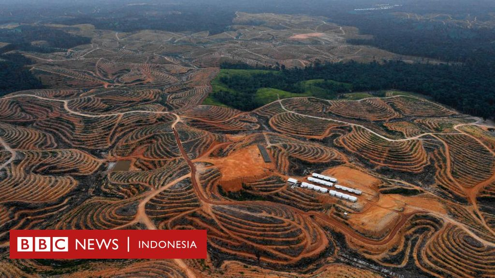
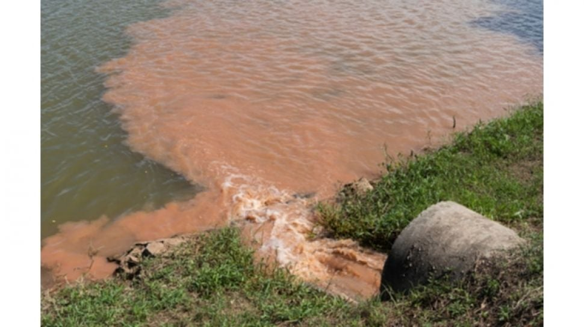
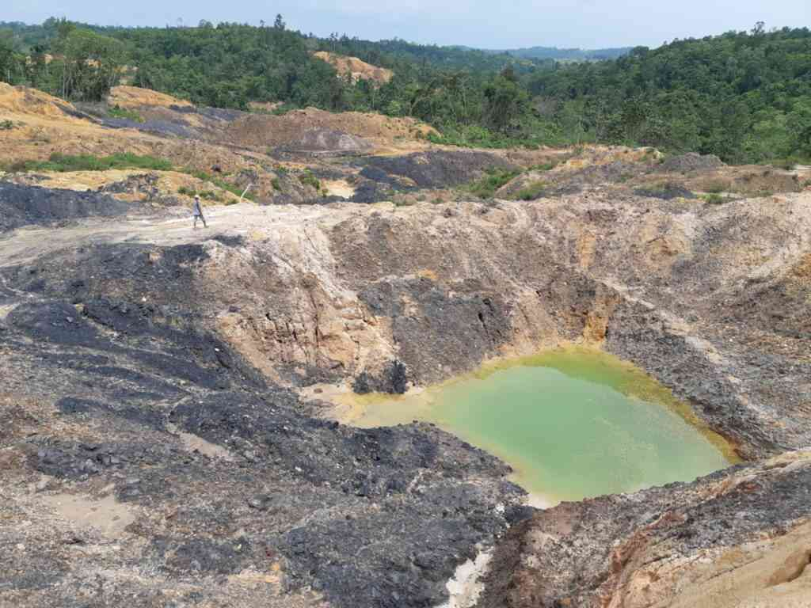
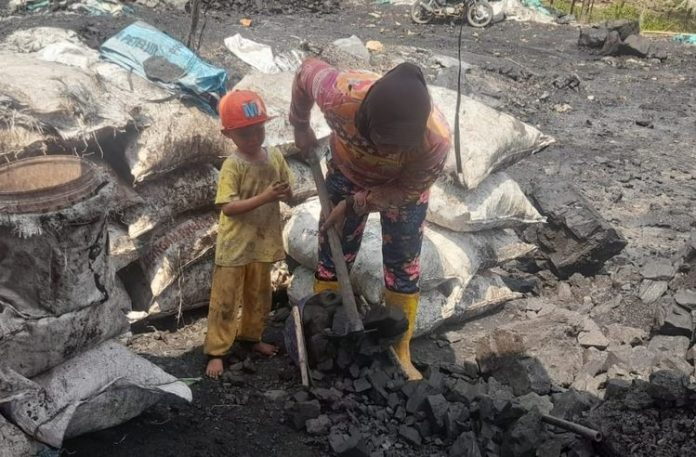
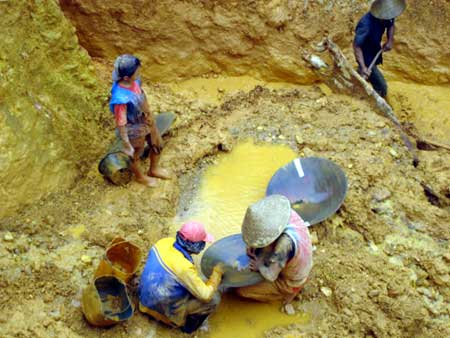

Aktivitas pertambangan timah sering kali menyebabkan kerusakan hutan karena sebelum proses penambangan dimulai, area hutan harus dibuka terlebih dahulu. Pohon-pohon yang sebelumnya tumbuh di wilayah tersebut ditebang agar alat berat dan berbagai peralatan penambangan dapat masuk dan beroperasi dengan lebih mudah. Proses pembukaan lahan ini mengakibatkan berkurangnya vegetasi yang memiliki peran penting dalam menjaga keseimbangan lingkungan. Hilangnya tutupan hutan tidak hanya mengubah kondisi alam secara fisik, tetapi juga dapat mengganggu keseimbangan ekosistem yang telah terbentuk sejak lama. Selain itu, hutan merupakan tempat hidup bagi berbagai jenis tumbuhan dan hewan. Ketika hutan rusak atau berkurang luasnya, banyak hewan yang kehilangan habitat serta sumber makanan mereka. Kondisi ini dapat menyebabkan hewan-hewan tersebut berpindah ke wilayah lain atau bahkan mengalami penurunan populasi. Oleh karena itu, kerusakan hutan akibat aktivitas pertambangan dapat memberikan dampak yang cukup besar terhadap keseimbangan ekosistem di suatu wilayah.
Hutan berfungsi sebagai penyerap air hujan dan penahan tanah. Jika hutan rusak, risiko banjir dan erosi tanah dapat meningkat.
Selain menyebabkan hilangnya vegetasi, kerusakan hutan akibat pertambangan juga dapat mempengaruhi kondisi tanah di wilayah tersebut. Akar pohon yang sebelumnya berfungsi menahan tanah tidak lagi tersedia, sehingga tanah menjadi lebih mudah terbawa oleh aliran air hujan. Hal ini dapat meningkatkan risiko terjadinya erosi tanah serta membuat permukaan tanah menjadi tidak stabil. Kondisi tersebut dapat terlihat secara langsung pada area yang telah mengalami pembukaan lahan untuk aktivitas pertambangan. Tanah yang sebelumnya tertutup oleh pepohonan berubah menjadi lahan terbuka yang lebih rentan terhadap kerusakan. Perubahan kondisi ini sering kali terlihat jelas pada lokasi-lokasi pertambangan yang berada di sekitar kawasan hutan.

Kerusakan hutan yang terjadi akibat aktivitas pertambangan dapat memberikan dampak jangka panjang terhadap lingkungan. Hutan memiliki berbagai fungsi penting, seperti menjaga kualitas udara, menyimpan cadangan air tanah, serta menjadi habitat bagi berbagai jenis makhluk hidup. Ketika hutan mengalami kerusakan, fungsi-fungsi tersebut tidak dapat berjalan dengan baik sehingga keseimbangan lingkungan dapat terganggu. Selain itu, hilangnya tutupan hutan juga dapat meningkatkan risiko bencana lingkungan seperti banjir dan longsor, terutama pada wilayah yang memiliki curah hujan tinggi. Oleh karena itu, kegiatan pertambangan seharusnya dilakukan dengan memperhatikan aspek lingkungan serta diikuti dengan upaya pemulihan seperti reboisasi atau penanaman kembali pohon agar kondisi hutan dapat dipulihkan secara bertahap.
1. Apakah salah satu penyebab kerusakan hutan akibat pertambangan?
2. Apa fungsi penting hutan bagi lingkungan?
3. Apa yang dapat terjadi jika hutan rusak?
4. Mengapa pohon penting bagi tanah?
5. Apa dampak hilangnya hutan bagi hewan?
Kegiatan pertambangan timah dapat menyebabkan pencemaran air di sungai, danau, maupun sumber air lainnya yang berada di sekitar lokasi tambang. Proses penggalian tanah dalam aktivitas penambangan menghasilkan banyak sedimen atau partikel tanah yang dapat terbawa oleh aliran air hujan menuju sungai. Akibatnya, air menjadi keruh dan kualitasnya mengalami penurunan. Air yang keruh ini tidak hanya mempengaruhi penampilan fisik air, tetapi juga dapat mengganggu kehidupan organisme yang hidup di dalamnya. Ikan dan berbagai makhluk hidup lain yang bergantung pada ekosistem perairan dapat mengalami kesulitan untuk bertahan hidup apabila kondisi air terus mengalami penurunan kualitas. Hal ini menunjukkan bahwa aktivitas pertambangan dapat memberikan dampak yang cukup besar terhadap lingkungan perairan.
Air yang tercemar sedimen dari pertambangan biasanya memiliki warna keruh dan dapat mengganggu kehidupan ikan serta tumbuhan air.
Selain sedimen tanah, pencemaran air juga dapat terjadi karena adanya limbah yang dihasilkan dari aktivitas pertambangan. Limbah tersebut dapat terbawa oleh air hujan menuju aliran sungai atau danau di sekitar wilayah pertambangan. Jika kondisi ini terjadi secara terus-menerus, maka kualitas air akan semakin menurun dan dapat merusak keseimbangan ekosistem perairan. Perubahan kualitas air ini biasanya dapat dilihat secara langsung dari kondisi air yang menjadi keruh atau berubah warna. Air yang sebelumnya jernih dapat berubah menjadi keruh karena banyaknya partikel tanah yang tercampur di dalamnya. Kondisi seperti ini sering ditemukan pada sungai atau perairan yang berada di dekat lokasi aktivitas pertambangan.

Penurunan kualitas air tidak hanya berdampak pada lingkungan, tetapi juga dapat mempengaruhi kehidupan masyarakat yang tinggal di sekitar wilayah tersebut. Air merupakan salah satu kebutuhan utama manusia yang digunakan untuk berbagai aktivitas sehari-hari seperti mandi, mencuci, dan memasak. Jika air mengalami pencemaran, maka aktivitas tersebut dapat terganggu. Selain itu, pencemaran air juga dapat menimbulkan berbagai masalah kesehatan apabila air yang tercemar digunakan tanpa melalui proses pengolahan yang baik. Oleh karena itu, pengelolaan aktivitas pertambangan yang memperhatikan pengolahan limbah dan perlindungan sumber air sangat penting untuk menjaga keberlanjutan lingkungan dan kesehatan masyarakat.
1. Apa yang menyebabkan air menjadi keruh akibat pertambangan?
2. Apa dampak pencemaran air bagi ikan?
3. Air yang tercemar biasanya memiliki warna?
4. Siapa yang dapat terdampak dari pencemaran air?
5. Mengapa air bersih penting?
Lubang bekas tambang atau yang dikenal dengan istilah kolong merupakan salah satu dampak yang paling mudah terlihat dari aktivitas pertambangan timah. Kolong terbentuk akibat proses penggalian tanah yang dilakukan untuk mengambil bijih timah dari dalam tanah. Proses penggalian ini biasanya menghasilkan lubang yang cukup besar dan dalam. Setelah aktivitas penambangan selesai, lubang tersebut sering kali tidak ditutup kembali atau dipulihkan. Seiring berjalannya waktu, lubang tersebut akan terisi oleh air hujan sehingga membentuk genangan air yang cukup luas. Keberadaan kolong ini dapat mengubah bentuk permukaan tanah dan bentang alam suatu wilayah secara signifikan.
Di wilayah Bangka Belitung terdapat banyak kolong bekas tambang yang terbentuk akibat aktivitas pertambangan timah.
Perubahan bentang alam akibat terbentuknya kolong dapat mempengaruhi kondisi lingkungan di sekitarnya. Area yang sebelumnya berupa daratan atau hutan dapat berubah menjadi lubang besar yang berisi air. Perubahan ini dapat mengganggu keseimbangan lingkungan serta mempengaruhi kondisi tanah di sekitar lokasi tersebut. Kolong juga sering kali menjadi salah satu ciri khas wilayah yang pernah mengalami aktivitas pertambangan. Lubang-lubang besar yang terisi air dapat terlihat dengan jelas pada beberapa daerah bekas tambang. Kondisi ini menunjukkan bagaimana aktivitas manusia dapat mengubah bentuk permukaan bumi dalam waktu yang relatif singkat.

Keberadaan kolong yang dibiarkan tanpa pengelolaan dapat menimbulkan berbagai dampak bagi lingkungan dan masyarakat sekitar. Selain mengubah bentuk bentang alam, kolong juga dapat menjadi potensi bahaya apabila berada dekat dengan permukiman masyarakat. Beberapa kolong memiliki kedalaman yang cukup dalam sehingga dapat membahayakan keselamatan. Oleh karena itu, kegiatan pertambangan seharusnya disertai dengan upaya reklamasi atau pemulihan lahan setelah aktivitas penambangan selesai. Proses reklamasi bertujuan untuk memperbaiki kondisi lahan agar dapat dimanfaatkan kembali dan mengurangi dampak negatif terhadap lingkungan.
1. Apa yang dimaksud dengan kolong?
2. Kolong biasanya terbentuk karena?
3. Kolong dapat mengubah?
4. Kolong biasanya terisi oleh?
5. Apa yang diperlukan untuk memperbaiki lahan bekas tambang?
Aktivitas pertambangan tidak hanya memberikan dampak terhadap lingkungan, tetapi juga dapat mempengaruhi kondisi sosial masyarakat yang tinggal di sekitar wilayah pertambangan. Kehadiran kegiatan tambang sering kali membawa perubahan pada pola kehidupan masyarakat. Sebagian masyarakat yang sebelumnya bekerja di sektor lain seperti pertanian, perkebunan, atau perikanan dapat beralih pekerjaan menjadi penambang karena dianggap memberikan penghasilan yang lebih cepat. Perubahan jenis pekerjaan ini dapat mempengaruhi struktur sosial masyarakat di suatu daerah. Aktivitas pertambangan biasanya melibatkan banyak tenaga kerja sehingga menciptakan lingkungan kerja baru serta interaksi sosial yang berbeda dibandingkan dengan pekerjaan tradisional. Dalam beberapa kasus, kegiatan tambang juga dapat menarik pendatang dari daerah lain yang datang untuk mencari pekerjaan di sektor pertambangan. Namun, perubahan sosial tersebut juga dapat menimbulkan berbagai tantangan. Perbedaan kepentingan antara masyarakat yang mendukung aktivitas pertambangan dengan masyarakat yang menolak kegiatan tersebut dapat memunculkan konflik sosial. Oleh karena itu, aktivitas pertambangan perlu dikelola dengan baik agar tidak menimbulkan ketegangan di lingkungan masyarakat.
Banyak masyarakat yang sebelumnya bekerja di sektor pertanian beralih menjadi pekerja tambang.
Selain mempengaruhi jenis pekerjaan masyarakat, aktivitas pertambangan juga dapat mempengaruhi hubungan sosial di lingkungan sekitar. Ketika kegiatan tambang berkembang di suatu wilayah, pola kehidupan masyarakat dapat berubah karena meningkatnya aktivitas ekonomi dan mobilitas penduduk. Kondisi ini dapat membawa perubahan terhadap gaya hidup serta cara masyarakat berinteraksi satu sama lain. Masuknya pendatang dari berbagai daerah untuk bekerja di sektor pertambangan juga dapat menambah keberagaman sosial di suatu wilayah. Keberagaman ini dapat memberikan dampak positif seperti bertambahnya jaringan sosial dan pertukaran budaya. Namun, apabila tidak dikelola dengan baik, perbedaan latar belakang sosial dan ekonomi juga dapat menimbulkan potensi konflik dalam masyarakat.

Dampak sosial dari aktivitas pertambangan dapat berlangsung dalam jangka panjang apabila tidak diimbangi dengan pengelolaan yang baik. Perubahan pola pekerjaan, masuknya pendatang, serta perubahan gaya hidup masyarakat dapat mempengaruhi kondisi sosial di suatu daerah. Oleh karena itu, penting bagi pemerintah dan masyarakat untuk bekerja sama dalam mengelola kegiatan pertambangan agar tetap memperhatikan kesejahteraan sosial masyarakat. Selain itu, upaya peningkatan pendidikan, keterampilan, serta kesadaran lingkungan juga dapat membantu masyarakat agar tidak hanya bergantung pada sektor pertambangan. Dengan demikian, masyarakat memiliki lebih banyak pilihan pekerjaan dan kondisi sosial di wilayah tersebut dapat tetap stabil.
1. Apa salah satu dampak sosial pertambangan?
2. Siapa yang terdampak aktivitas tambang?
3. Pertambangan dapat mengubah?
4. Mengapa masyarakat bekerja di tambang?
5. Apa yang perlu dijaga dalam kehidupan sosial?
Kegiatan pertambangan dapat memberikan dampak ekonomi bagi masyarakat dan daerah tempat aktivitas tersebut berlangsung. Kehadiran sektor pertambangan biasanya membuka peluang kerja bagi masyarakat sekitar sehingga dapat meningkatkan pendapatan sebagian penduduk. Banyak orang yang bekerja sebagai penambang, operator alat berat, maupun pekerja lain yang berkaitan dengan kegiatan pertambangan. Selain membuka lapangan pekerjaan, aktivitas pertambangan juga dapat mendorong berkembangnya kegiatan ekonomi lainnya di sekitar wilayah tambang. Misalnya, munculnya warung makan, toko kebutuhan sehari-hari, jasa transportasi, serta berbagai usaha kecil yang melayani para pekerja tambang. Kondisi ini dapat meningkatkan perputaran uang di suatu daerah. Namun, dampak ekonomi dari pertambangan tidak selalu bersifat positif. Ketergantungan masyarakat terhadap sektor pertambangan dapat menjadi masalah apabila sumber daya tambang mulai berkurang atau aktivitas pertambangan berhenti. Oleh karena itu, diperlukan pengelolaan ekonomi yang baik agar masyarakat tetap memiliki sumber penghasilan lain di luar sektor pertambangan.
Banyak masyarakat memilih bekerja di sektor pertambangan karena dianggap dapat memberikan penghasilan yang lebih cepat.
Pertumbuhan ekonomi di daerah pertambangan biasanya terlihat dari meningkatnya aktivitas perdagangan dan jasa di sekitar lokasi tambang. Kehadiran para pekerja tambang menciptakan permintaan terhadap berbagai kebutuhan sehari-hari seperti makanan, transportasi, dan tempat tinggal. Hal ini mendorong masyarakat untuk membuka berbagai usaha yang dapat melayani kebutuhan tersebut. Namun di sisi lain, ketergantungan yang terlalu besar pada sektor pertambangan dapat membuat ekonomi daerah menjadi kurang stabil. Jika aktivitas pertambangan menurun atau berhenti, banyak masyarakat yang kehilangan sumber pendapatan utama mereka. Oleh karena itu, pengembangan sektor ekonomi lain seperti pertanian, pariwisata, atau usaha kecil menjadi penting untuk menjaga kestabilan ekonomi masyarakat.

Dampak ekonomi dari aktivitas pertambangan dapat memberikan manfaat apabila dikelola dengan baik dan berkelanjutan. Pendapatan yang diperoleh dari sektor pertambangan dapat digunakan untuk meningkatkan kesejahteraan masyarakat serta pembangunan daerah. Namun, pengelolaan yang tidak memperhatikan keberlanjutan dapat menimbulkan ketergantungan ekonomi terhadap sumber daya alam yang terbatas. Oleh karena itu, penting bagi pemerintah dan masyarakat untuk memanfaatkan hasil pertambangan secara bijak serta mengembangkan sektor ekonomi lain sebagai alternatif sumber pendapatan. Dengan demikian, kesejahteraan masyarakat dapat tetap terjaga meskipun aktivitas pertambangan suatu saat mengalami penurunan.
1. Apa manfaat ekonomi dari pertambangan?
2. Apa peluang usaha yang muncul dari pertambangan?
3. Mengapa masyarakat bekerja di tambang?
4. Apa risiko jika terlalu bergantung pada tambang?
5. Apa yang perlu dikembangkan selain tambang?